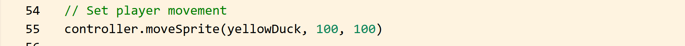
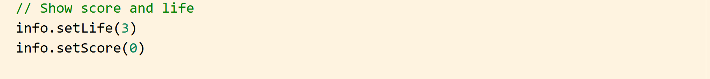
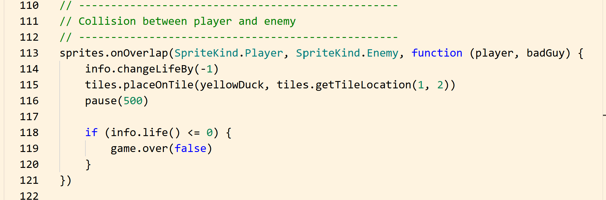
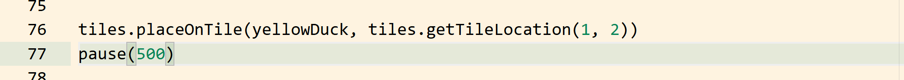
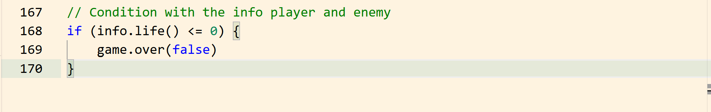
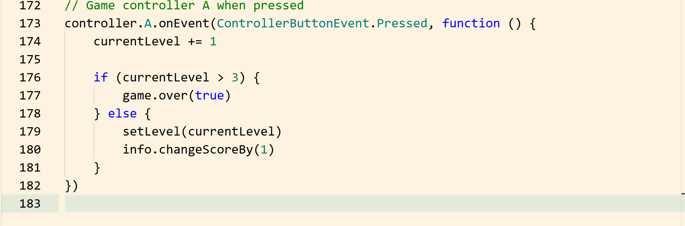
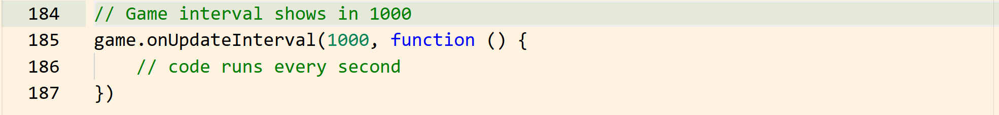

Game Controls and Events in MakeCode Arcade
In this tutorial, you will learn how to control gameplay in MakeCode Arcade.
This includes player movement, score tracking, life system, collision detection, and changing levels.
Game controls and events make your game interactive and responsive to player actions.
Overview
Game controls allow the player to interact with the game using the keyboard or controller.
Events are used to trigger actions when something happens, such as pressing a button or colliding with an enemy.
In this section, you will learn to:
- Control the player movement
- Add score and life systems
- Detect collisions
- Create button events
- Manage game progression
Step 1: Enable Player Movement
To allow the player to move, use the controller.moveSprite() function.
- Copy and paste this code into your code editor.
controller.moveSprite(yellowDuck, 100, 100)

Info
This allows for movement in all directions using the arrow keys. The first 100 controls horizontal speed, and the second 100 controls vertical speed.
Step 2: Add Life System
The life system tracks how many chances the player has before the game ends.
- Copy and paste this code into your code editor. The order doesn't matter, but it's best practice to add new code after the rest of your old code.
info.setLife(3)
Info
This gives the player 3 lives at the start of the game.
Step 3: Add Score System
The score system tracks the player’s progress.
- Copy and paste the code below into your code editor.
info.setScore(0)
- You can increase the score when the player completes a level:
info.changeScoreBy(1)

Step 4: Detect Collision Between Player and Enemy
We can use an overlap event to detect when the player touches the enemy, so that the player takes damage when they touch.
sprites.onOverlap(SpriteKind.Player, SpriteKind.Enemy, function (player, badGuy) {
info.changeLifeBy(-1)
})
When a collision happens:
- the player loses one life

Step 5: Reset Player Position After Collision
- Add a checker for collisions to reset the player’s position.
tiles.placeOnTile(yellowDuck, tiles.getTileLocation(1, 2))
pause(500)
Info
This prevents immediate repeated collisions.

Step 6: End Game When Life Reaches Zero
Add a condition to end the game when the player has no lives left.
if (info.life() <= 0) {
game.over(false)
}
Info
Here, false means the player loses, and true means the player wins.

Step 7: Create Button Event for Level Change
Use a button event to allow the player to move to the next level.
controller.A.onEvent(ControllerButtonEvent.Pressed, function () {
currentLevel += 1
if (currentLevel > 3) {
game.over(true)
} else {
setLevel(currentLevel)
info.changeScoreBy(1)
}
})

This:
-
Increases the level
-
Loads the next level
-
Increases the score
-
Ends the game if all levels are completed
Step 8: Use Update Events (Optional)
Use update events to run code repeatedly.
game.onUpdateInterval(1000, function () {
// code runs every second
})
This is useful for:
-
Enemy movement
-
Timers
-
Repeated actions

Conclusion
In this tutorial, you learned how to:
-
Enable player movement
-
Create a life system
-
Create a score system
-
Detect collisions
-
Reset player position
-
End the game
-
Use button events
-
Control game flow
Game controls and events are essential for making your game interactive and engaging. You can now move on to the next section, Tilemap.